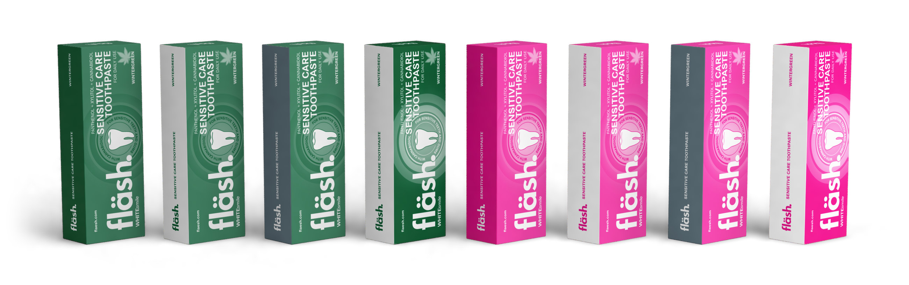

Die neue Faltschachtel in acht Farbvorschlägen
Dreidimensional dargestellt nach Stanze und Druckdaten. Jeder Vorschlag ist von vorne, von hinten und liegend zu sehen. Ein Klick auf ein Bild öffnet die große Ansicht.

Farbvorschlag 1
Seite dunkelgrün, Front grün
Farbvorschlag 2
Seite weiß, Front grün
Farbvorschlag 3
Seite grau, Front grün
Farbvorschlag 4
Seite weiß, Front dunkelgrün
Farbvorschlag 5
Seite magenta, Front pink
Farbvorschlag 6
Seite weiß, Front pink
Farbvorschlag 7
Seite grau, Front pink
Farbvorschlag 8
Seite weiß, Front magenta